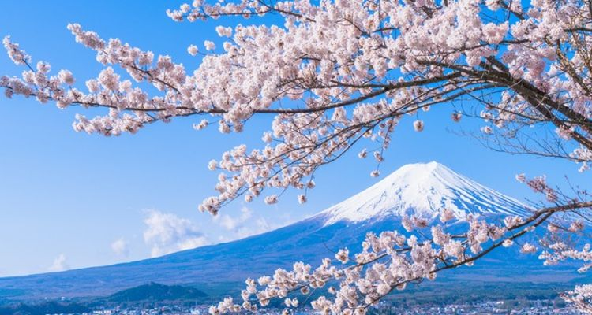
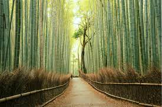
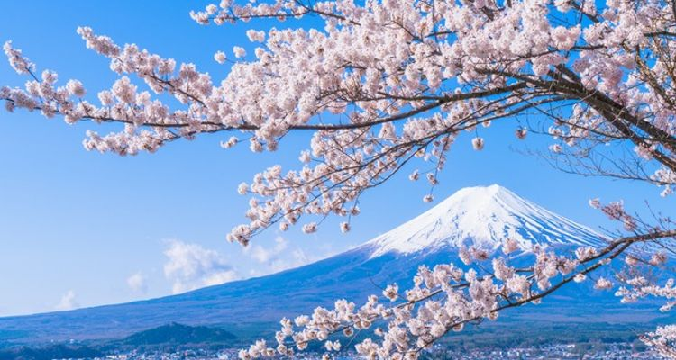
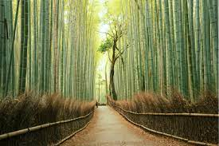

Japan
 




Japan: A mix of Eastern traditions crossed with Western modernity, Japan is one of the oldest civilizations complete with diverse history, majestic temples and boasts 21 UNESCO World Heritage Listed sites; pristine natural scenery such as Mount Fuji and its forested hills, a chance to take a dip in a mineral-rich Onsen hot spring bath heated by geothermal forces which are said to offer ‘rejuvenating powers’; its freshly powdered ski fields in winter, and in spring the blooming of the cherry blossoms which peak in April. Food and entertainment are important to Japanese culture, so while on holiday you must sample a range of the many delicious dishes that make up their traditional cuisine (while sipping on sake and singing karaoke, obviously). FYI – Japan is the birthplace of Karaoke and there are around 100,000 karaoke boxes and bars across the country. So find your favorite song and immerse yourself in the culture! Embrace the timeless tradition and modern spirit of Japan’s iconic sites, to the soothing hot springs of Kotohira, then ponder over world peace in Hiroshima with Trafalgar’s Splendours of Japan.
How to get to Japan
Most people travel to Japan from overseas by plane. If you plan to fly to Japan you are most likely going to arrive at Narita Airport (outside Tokyo), Haneda Airport (in Tokyo) or Kansai Airport (outside Osaka) - or increasingly into Chitose International Airport in Sapporo, Hokkaido.
Narita and Haneda (in the Tokyo region) and Kansai are the main travel hubs, and most major airlines offer direct flights to and from North America, the UK, Australia and New Zealand, as well as many Asian destinations. Other airlines also have flights, but it usually involves a stopover in one of their home cities. There are also international airports in Honshu (Nagoya and Niigata), Kyushu (Fukuoka, Kagoshima, Kumamoto and Nagasaki) and Okinawa (Naha). Depending on where you are going, or where you are coming from, it can be cheaper and more convenient to use one of these airports. Nagoya is especially easy to get in and out of and it is conveniently located between Tokyo and Osaka.
Ticket prices are highly dependent on the time of year so prepare to pay a lot if you plan on traveling during peak season. Tickets are most expensive in July and August, and around Christmas and New Year's. Flying on weekdays can often save you money as well. Be prepared to pay a departure tax of around Y2000 when leaving the country, although this can sometimes be included in your ticket price. Recently very cheap flights have been available in Japan and worth looking into.